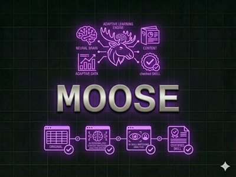
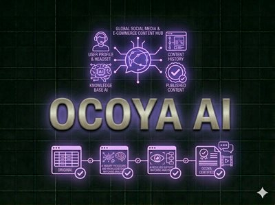
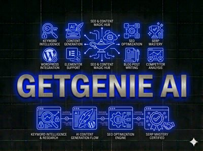
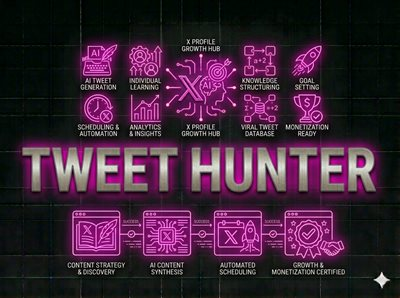
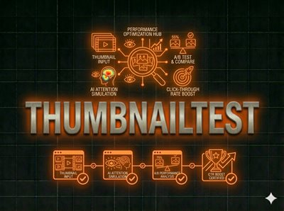
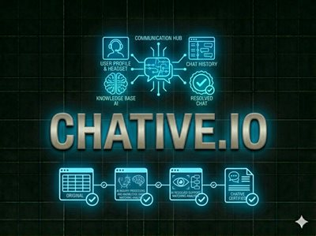
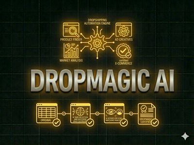
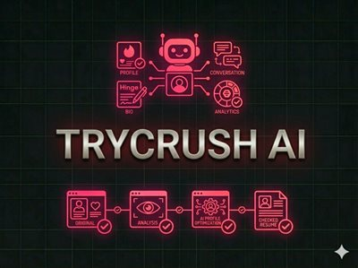

Najbolji AI Marketing Alati 2026 – Top 10 Testiranih
Najbolji AI marketing alati u 2026. mogu automatizirati društvene mreže, pisati SEO sadržaj, pokretati Facebook oglase i upravljati korisničkom podrškom — sve bez velikog tima. Ova lista pokriva sve što trebate za pametniji i brži digitalni marketing u 2026. Svaki alat testiran je i recenziran od strane WebAlati tima.

Moose (Hi, Moose)
FreemiumAI optimizacija sadržaja za novu generaciju SEO-a uključujući ChatGPT, Perplexity i AI Overviews. Strukturira sadržaj za AI citiranje i pruža SEO brifinge i generiranje FAQ-ova.
Isprobaj Moose →PagerGPT
FreemiumNo-code platforma za izgradnju AI chatbotova treniranih na vašim podacima. Automatizira korisničku podršku i prodajne razgovore na web stranicama.
Isprobaj PagerGPT →
Ocoya
FreemiumPlatforma za upravljanje društvenim mrežama koja kombinira AI kreiranje sadržaja, zakazivanje objava i analitiku. Generirajte postove, vizuale i automatizirajte objave na svim platformama.
Isprobaj Ocoya →
GetGenie AI
FreemiumWordPress AI asistent za SEO optimizirani sadržaj. Piše blogove, opise proizvoda i meta tagove izravno u WordPress editoru s ugrađenom analizom konkurencije.
Isprobaj GetGenie →
Tweet Hunter
FreemiumAlat za rast na Twitteru (X) za pisanje uspješnih postova, analizu viralnog sadržaja i izgradnju angažirane publike. Uključuje zakazivanje, CRM i analitiku.
Isprobaj Tweet Hunter →
ThumbnailTest
FreemiumAnalizira i optimizira YouTube thumbnailove koristeći simulaciju pažnje i A/B testiranje. Maksimizirajte CTR prije nego što objavite bilo koji video.
Isprobaj ThumbnailTest →
Chative.io
FreemiumPlatforma za korisničku podršku koja kombinira live chat i AI chatbotove za 24/7 automatizirane odgovore. Integrira se s web stranicom, bazom znanja i e-commerce sustavima.
Isprobaj Chative →
Dropmagic
FreemiumAI alat za dropshipping koji pronalazi profitabilne proizvode i analizira tržišne trendove. Automatizira istraživanje, kreiranje oglasa i optimizaciju trgovine.
Isprobaj Dropmagic →Caimera
FreemiumAI generator vizuala za proizvode i marketinških kreativa — bez foto-snimanja. Kreirajte skalabilne marketinške kampanje i slike za e-commerce i društvene mreže.
Isprobaj Caimera →
Trycrush AI
FreemiumAutomatizira Facebook reklamne kampanje koristeći AI — kreiranje oglasa, copywriting i optimizacija kampanja s minimalnim ručnim unosom. Poboljšajte ROI automatskim testiranjem.
Isprobaj Trycrush →Često Postavljana Pitanja – AI Marketing Alati
Koji je najbolji AI alat za marketing na društvenim mrežama?
Ocoya je vodeći izbor za upravljanje društvenim mrežama, kombinirajući AI pisanje sadržaja, zakazivanje i analitiku u jednoj platformi. Tweet Hunter je posebno dobar za rast na platformi X (Twitter).
Koji AI alat automatski piše SEO sadržaj?
GetGenie AI i Moose su lideri za AI SEO sadržaj. GetGenie se integrira direktno u WordPress, dok se Moose fokusira na optimizaciju za ChatGPT i Perplexity pretrage.
Može li AI voditi Facebook oglase automatski?
Da — Trycrush AI automatizira kreiranje, testiranje i optimizaciju Facebook reklamnih kampanja koristeći AI, što značajno smanjuje potrebno vrijeme za upravljanje plaćenim oglašavanjem.